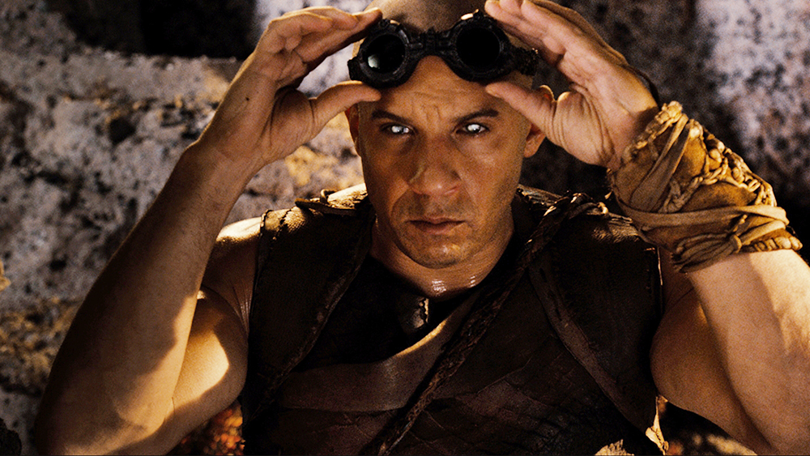
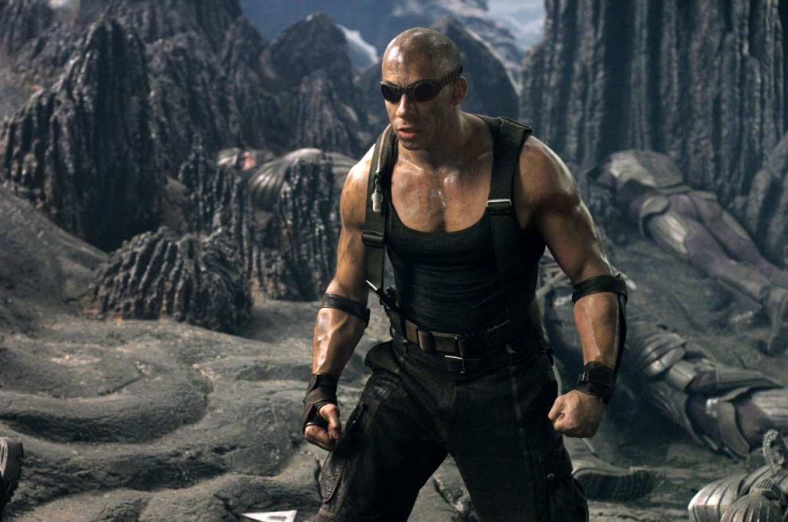
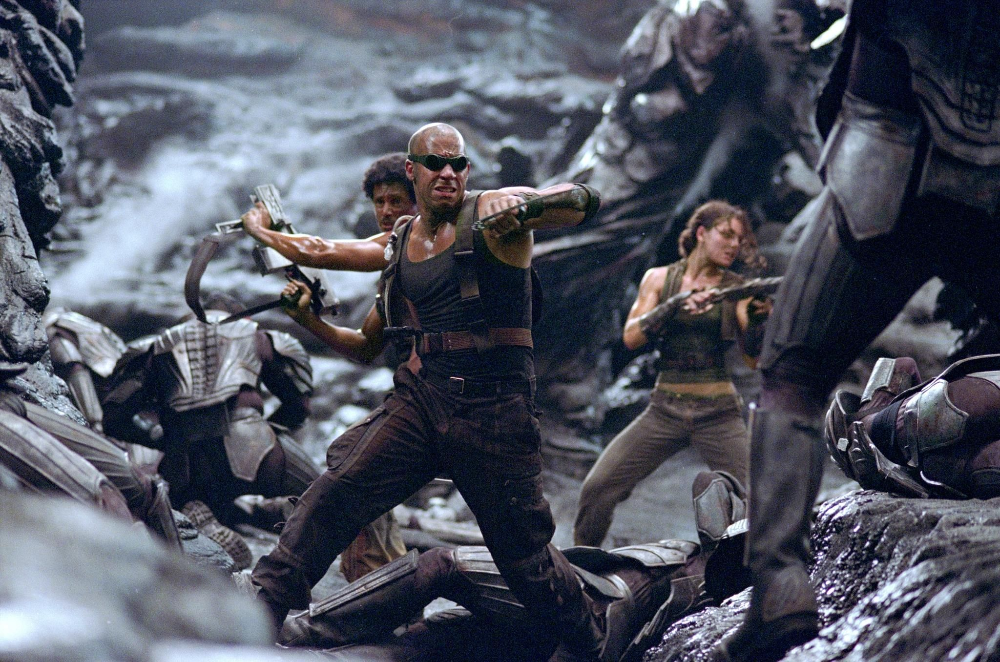
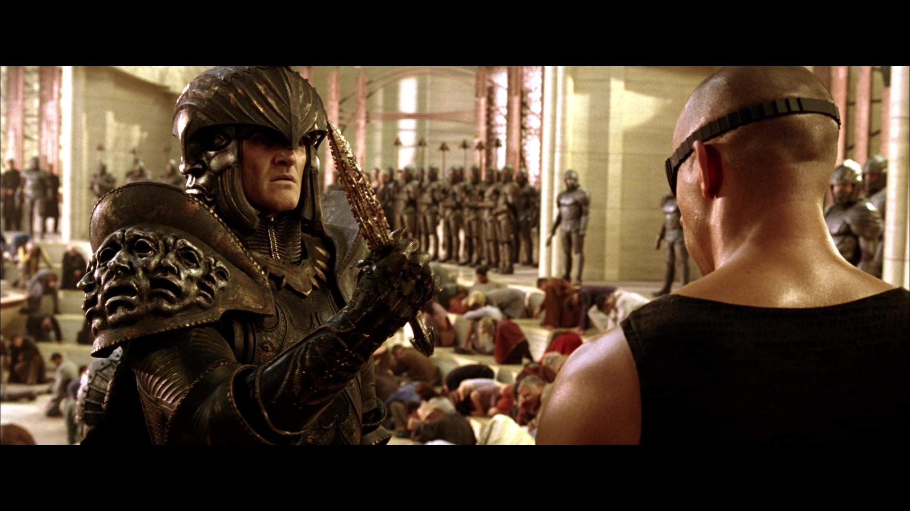
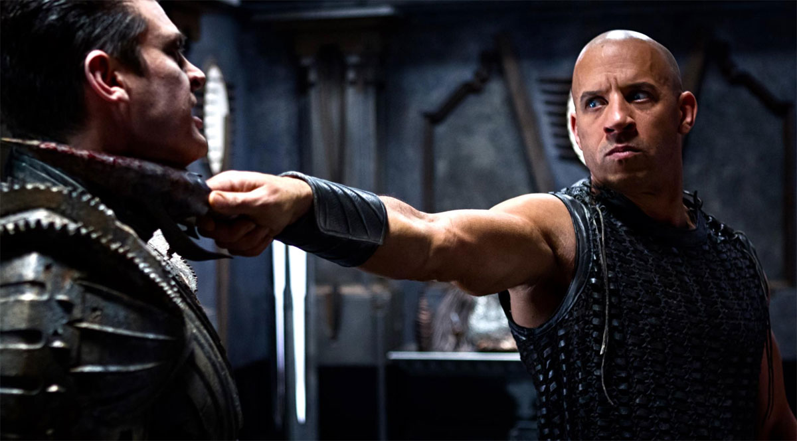
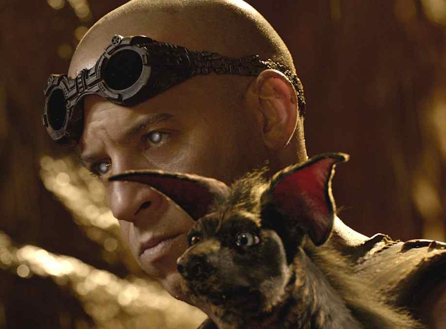
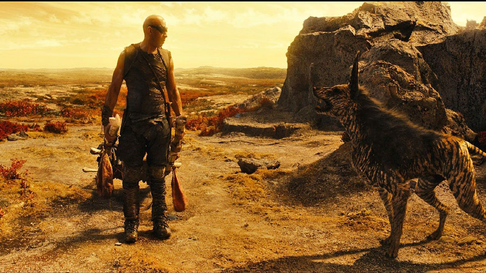
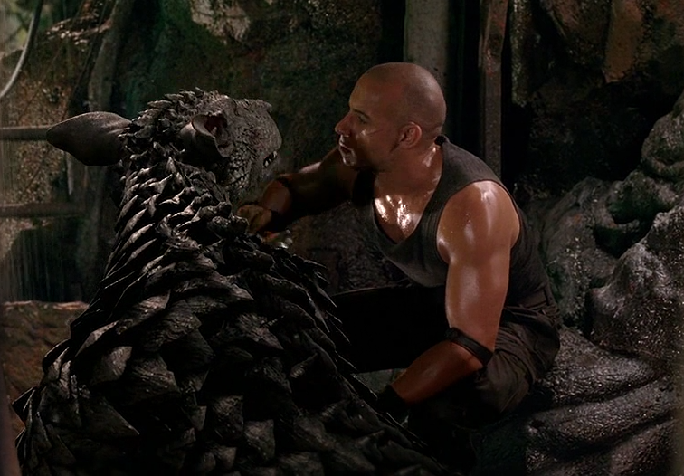
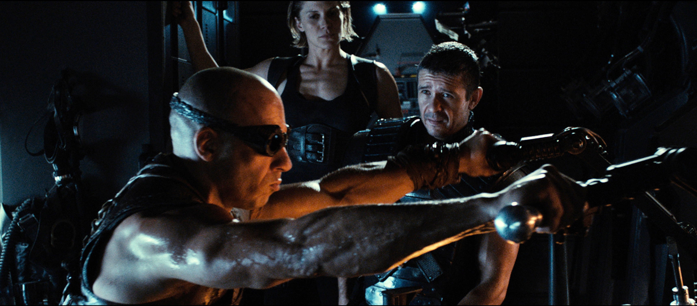
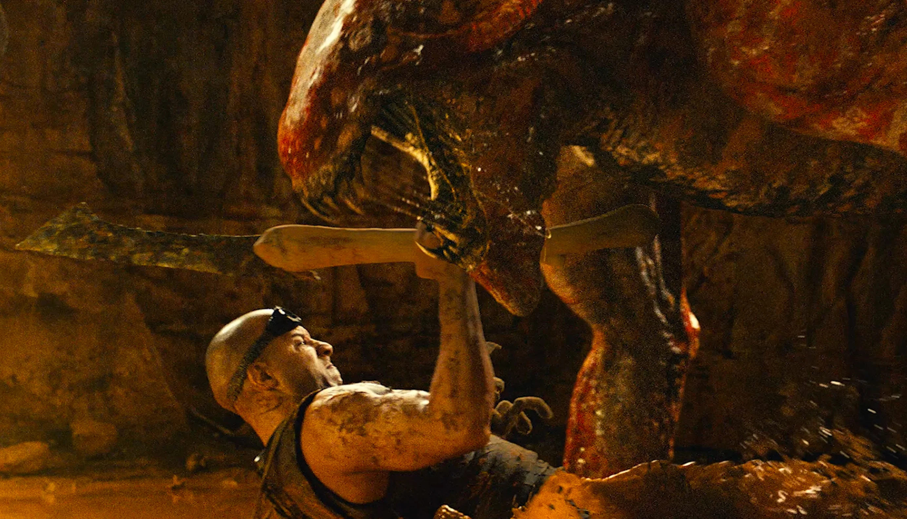

Риддик

Описание
Мускулистый нарушитель закона, чьи саркастические цитаты сражают наповал, – не просто злодей.
Риддик – последняя надежда Вселенной на выживание. Только вот сам персонаж не горит желанием спасать жизнь обитателям Галактики.
И неудивительно,ведь если твое первое воспоминание о детстве включает в себя коробку возле винного магазина,
любить эту Вселенную довольно сложно.
Риддик родился на планете Фурия. О родителях и близких мужчины ничего не известно.
Родная планета Ричарда была уничтожена много лет назад, герой стал одним из немногих спасшихся.
Чтобы выжить в одиночку, Риддик начинает воровать. Однажды кража заканчивается случайным убийством.
Так Ричард становится одним из опаснейших преступников во Вселенной. За голову мужчины назначено вознаграждение,
но поймать фурианца не так-то просто.
Помимо развитой мускулатуры и невероятной ловкости, Риддик имеет необычные глаза, которые способны видеть в темноте.
Первое появление
Чёрная дыра ( 2000 )
Занятие
Убийца,вор
Настоящее имя
Ричард Б.Риддик
Локация
Необъятные просторы Вселенной
Галерея








